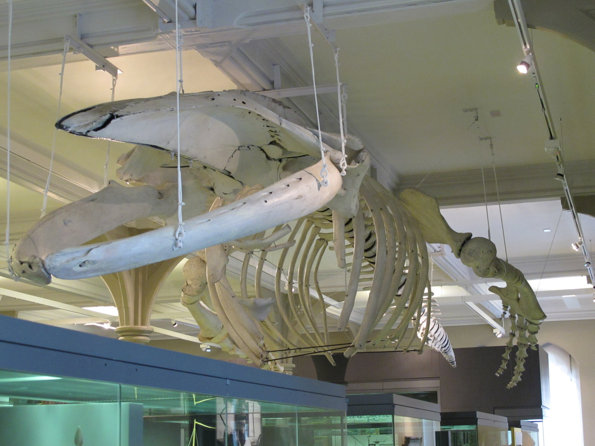
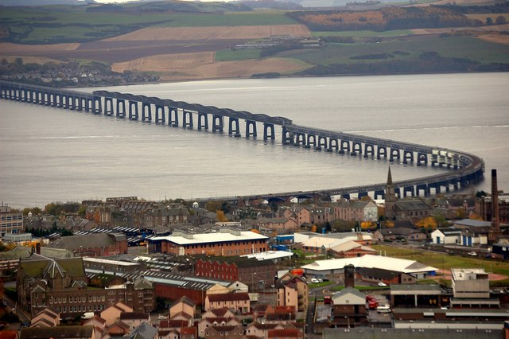
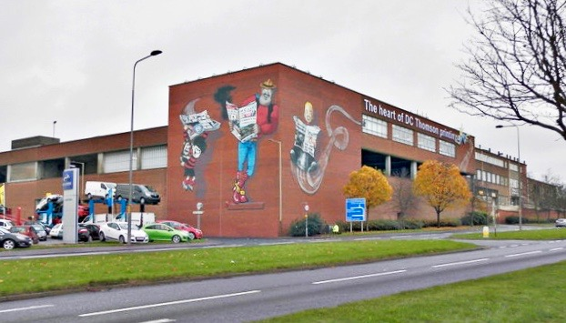
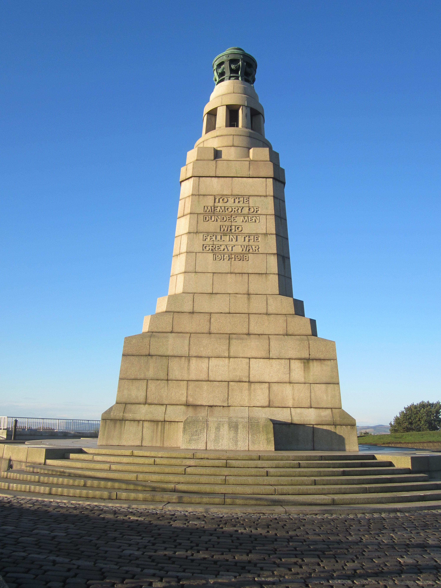

In 1881, one of two polar bears that had been brought to Dundee by a whaling ship escaped and ran around Commercial Street. The polar bear chased after a man and ended up entering a shop with him. When the polar bear got inside it became enraged with its own reflection that it saw in a mirror inside the shop. Eventually, some men managed to enter the back of the shop and recapture it while the bear was distracted by the mirror.3 This year, a statue, that was commissioned by the Dundee City Council, of the polar bear and the man it chased was put up in Dundee's City Center with a plaque describing the incident.4
|  |
|---|
The Tay Whale, also referred to as 'The Monster', was a humpback whale that was hunted hunted in the River Tay in 1883. The whale was first seen in the Firth of Tay. After multiple attempts to harpoon it, one ship finally managed to harpoon it in the neck. Multiple boats joined the boat that harpooned the whale in an attempt to slow it down but the whale kept moving and eventually, after passing the Broughty Castle it began to turn dark outside and the whale disappeared out to sea along with the boats that were connected to it with the harpoon line. The whale ended up going in a circle and swam back in the direction of Dundee. Once the boat and ship were spotted in Dundee again people continued to fire weapons at the whale to try and speed up its death but the harpoon ended up coming out of the whale and it swam away. The body of the whale was found in the sea near Stonehaven a week later. Today the skeleton of the Tay Whale can be seen in the McManus museum.5
|  |
|---|
In 1879, the Tay Bridge (the bridge that connects Dundee with Fife) collapsed into the River Tay during a storm, resulting in the deaths of the 75 people who were riding the train that was on the bridge at the time. The Court of Inquiry investigating the collapse of the bridge concluded that the disaster was caused by the lack of cross bracings on the bridge, and that if proper safety measures had been put in place while building the bridge it wouldn't have collapsed from the storm.6 The bridge has now been rebuilt and hopefully won't collapse again. In 2013 a memorial with the 59 names (only 59 out of 75 of the victims names are known) was put up on both the Dundee and Fife side of the Tay Bridge.7
|  |
|---|
Dundee is well known for it's three J's: Jute, Jam and Journalism.
Dundee used to produce so much jute that it was known as 'Juteopolis'. In the 1700s it was already well known for producing large quantities of linen. In the 1830s Dundee started producing jute alongside linen. The jute production quickly took over and Dundee was then known more for its jute production than its linen production. By the 1920s, the Dundee jute industry declined as it was overtaken by the jute industry in India, eventually it stopped producing jute altogether.
Marmalade was (allegedly) created by a woman from Dundee in the 1700s. Her recipe was then further developed by her son, James Keiller, who proceded to open factories that produced jams and marmalades. The jam his factory produced used to be famous world wide although it is no longer produced now.8
Dundee is also home to DC Thomson & Son Ltd which produces various magazines, comics and newspapers such as: Danger Mouse, The Sunday Post, Bunty and Mandy.9 Some very iconic characters such as Dennis the Menace, Minnie the Minx and The Bash Street Kids come from DC Thomson publications.
|  |
|---|
A volcanic sill10 with a great view of the whole of Dundee. In the Iron Age it was used as a hillfort that protected both people and their livestock during wars. In the 1800s a tunnel was built through the hill for the Dundee to Newtyle railway. On 1925 a war memorial was built in memory of the men who lost their lives during the First World War. In the 1940s, during the Second World War, a pillbox was built on the hill to be used as a lookout. The tunnel that was built for the railway in the 1800s was used as a shelter during air raids. In the 1960s the woodland was restored to the Law Hill, the Law finally had trees again after hundreds of years.11